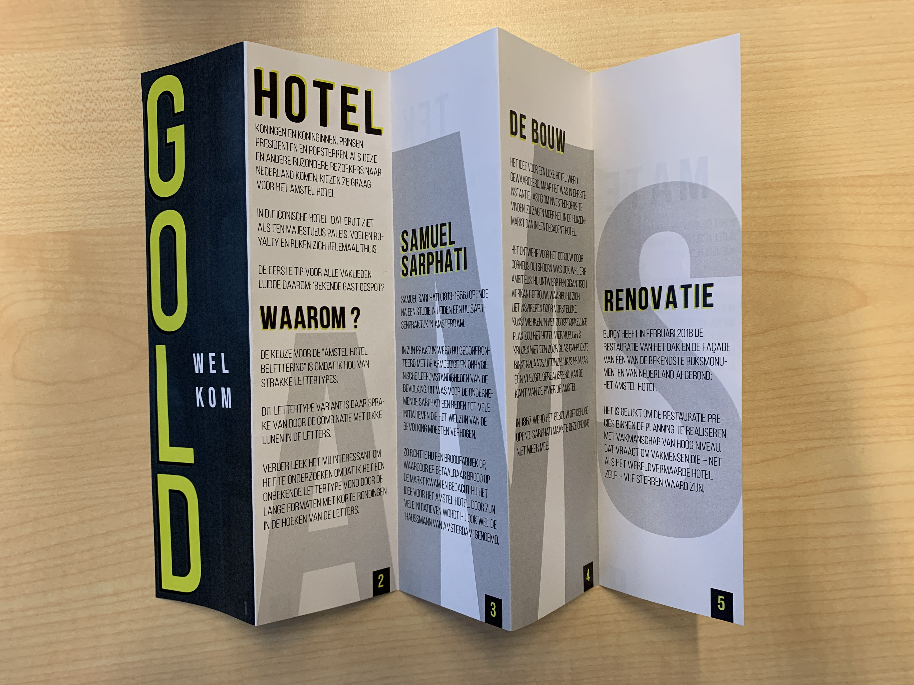
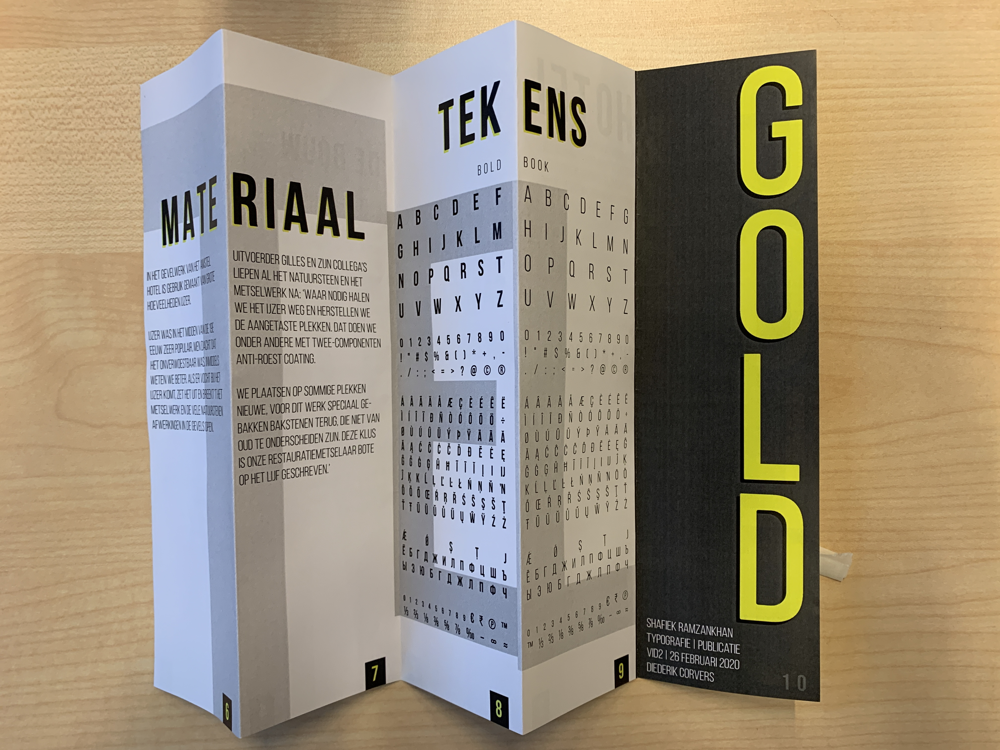

Typografie
Het woord zegt het al, je leert hoe je naar een beeld moet kijken. Er zijn verschillende manieren vanuit verschillende perspectieven met daarbij stoffen om naar een beeld te kijken en te bestuderen.
Week 01 - 25 Foto's verzamelen van A'dam

In de eerste week ben ik gaan lopen in de straten van amsterdam om verschillende typografie-vormen te fotograferen. De eis hierbij was dat er minimaal 25 foto's gemaakt moesten worden.
Week 02 - Het Amstel Hotel

Dit zijn de letters van de gevelbelettering van het Amstel Hotel. Het woord "GOLD" heeft het gevoel van het hotel vanwege de oudheid en hierin sliepen bekende mensen zoals koningen, koninginnen, prinsen en prinsessen.
Week 03 - Publicatie
 De publicatie is een brochure waar vele informaties staan over het Amstel Hotel zoals de oprichter, de bouw, renovatie, materiaal en tekens van de gevelbelettering.